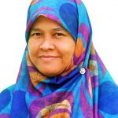
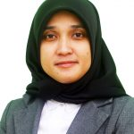
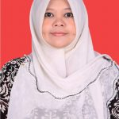
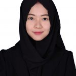
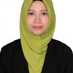

Program Studi S1 Teknik Informatika merupakan salah satu dari 3 (tiga) program studi di bawah Fakultas Teknik Universitas Maritim Raja Ali Haji (UMRAH). Program studi ini dibentuk untuk mempersiapkan tenaga akademik dan/atau profesional yang mampu mengembangkan ilmu pengetahuan dan keterampilan di bidang Teknik Informatika.
“Menjadi Program Studi unggulan dalam bidang Teknik Informatika yang berwawasan Kemaritiman yang bersaing ditingkat ASEAN pada tahun 2040”
1. Menyelenggarakan pendidikan tinggi di bidang Informatika berwawasan kemaritiman yang unggul di tingkat nasional dan regional;
2. Mengembangkan penelitian dalam bidang Informatika yang bercirikan kemaritiman di tingkat nasional dan regional;
3. Menyebarluaskan pemanfaatan teknologi informasi untuk pemberdayaan dan peningkatan kualitas hidup masyarakat bersama stakeholder dan shareholder di daerah, nasional dan regional;
4. Mendukung aktifitas entrepreneurship dan ventura dengan memanfaatkan bidang informatika untuk kesejahteraan sosial masyarakat.
1. Menghasilkan lulusan yang unggul di bidang Informatika yang berwawasan kemaritiman di tingkat nasional dan regional;
2. Tercapainya program studi unggul di bidang Informatika berwawasan kemaritiman di tingkat nasional dan regional;
3. Terwujudnya kolaborasi dengan stakeholder dan shareholder di daerah dan nasional dalam bidang informatika berwawasan kemaritiman;
4. Menghasilkan entrepreneur yang mampu memanfaatkan teknologi informasi untuk kesejahteraan sosial masyarakat pesisir dan kepulauan.
| No | Nama Dosen | NIP/NIDN | Riwayat Pendidikan |
|---|---|---|---|
| 1 | Tekad Matulatan, S.Sos., S.Kom., M.Inf.Tech |
NIP : 198304122021212011 NIDN : 0512048301 |
S1 : STMIK Dipanegara Universitas Hasanuddin; S2 : Finders University, AUS. |
| 2 |  Martaleli Bettiza, S.Si., M.Sc. |
NIP : 197508282021212006 NIDN : 1028087501 |
S1 : Matematika ITB; S2 : Engineering Mathematics University Of Twente, The Netherland. |
| 3 |  Nerfita Nikentari, ST., M.Cs. |
NIP : 198302032012122004 NIDN : 1003028303 |
S1 : Teknik Informatika UPN Veteran Yogyakarta; S2 : Ilmu Komputer UGM |
| 4 | Eka Suswaini, ST., M.T. |
NIP : 198304122021212011 NIDN : 0512048301 |
S1 : Teknik Industri UII; S2 : Teknik Industri Trisakti |
| 5 |  Nurfalinda S.T., M.Cs |
NIP : 198401212019032013 NIDN : 0512048301 |
S1 : Teknik Informatika UIN Suska Riau; S2 : Ilmu Komputer UGM |
| 6 | Hendra Kurniawan, S.Kom., M.Sc.Eng |
NIP : 198404022014041001 NIDN : 0002048401 |
S1 : Teknik Informatika ITS; S2 : Computer Science NTUST Taiwan |
| 7 | Ferdi Chahyadi, S.Kom., M.Cs |
NIP : 198902222018031001 NIDN : 0022028903 |
S1 : Teknik Informatika UII; S2 : Ilmu Komputer UGM |
| 8 | Muhamad Radzi Rathomi, S.Kom., M.Cs |
NIP : 1989032520190310141 NIDN : 0025038904 |
S1 : Sistem Informasi Universitas Lancang Kuning; S2 : Ilmu Komputer UGM |
| 9 |  Alena Uperiati, S.T., M.Cs |
NIDN : 0022068904 | S1 : Teknik Informatika UMRAH; S2 : Ilmu Komputer UGM |
| 10 | Nola Ritha, S.T., M.Cs |
NIP : 199011142019032016 NIDN : 0014119001 |
S1 : Teknik Informatika UMRAH; S2 : Ilmu Komputer UGM |
| 11 |  Nurul Hayaty, S.T., M.Cs |
NIP : 199103272019032019 NIDN : 0027039101 |
S1 :Teknik Informatika UMRAH; S2 : Ilmu Komputer UGM |